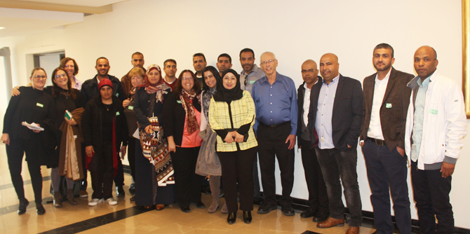
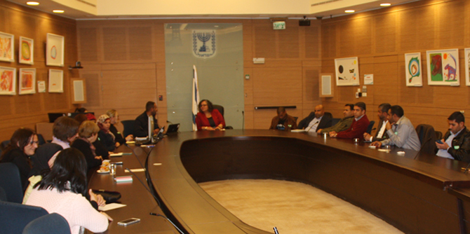
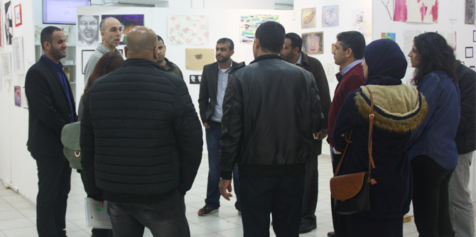

In a two-day retreat dedicated to policy and education held in late March 2017, the fellows of the Mandel Program for Local Leadership in Wadi al-Khalil visited the Knesset, met with Knesset members Aida Touma-Sliman and Benny Begin, and toured the Charles E. Smith Jerusalem High School for the Arts and the Jerusalem Experimental High School.
The first day of the retreat focused on “top-down influence” that is exerted via policy making and legislation. The fellows met with MK Benny Begin and discussed his proposal for a solution for the unrecognized Bedouin settlements in the Negev. The failure of his plan to pass into legislation served as a case study for discussing the mechanisms involved in decision making, and provided a broad perspective on the distribution of power and resources in politics.

Mandel fellows with MK Benny Begin at the Knesset
Next, the fellows sat in on a session of the Knesset House Committee to observe the decision-making process. They met with MK Aida Touma-Sliman, head of the Knesset Committee on the Status of Women and Gender Equality, and spoke with her about women’s status in Arab society and about recent changes in attitudes to women, of both the state and society in general. MK Touma-Sliman noted that Arab women are the weakest link in Israel, in terms of both education and employment, and constitute a minority within a minority.
 Mandel fellows meet with MK Aida Touma-Sliman at the Knesset
The second day of the retreat was given over to educational policy and “bottom-up influence.” The fellows learned about unique high school models that aid the development of students whose needs have not been met by regular public high schools. They visited the Charles E. Smith Jerusalem High School for the Arts, where the principal and teaching staff described the school’s model for learning via the arts. The fellows also visited the Jerusalem Experimental High School, where the principal and teachers introduced them to the school’s unique educational model. Learning about the models employed in Jerusalem led to a discussion about the range of educational options available in the Negev in comparison to other areas of Israel.

{kind=link}
{kind=link}
{kind=link}